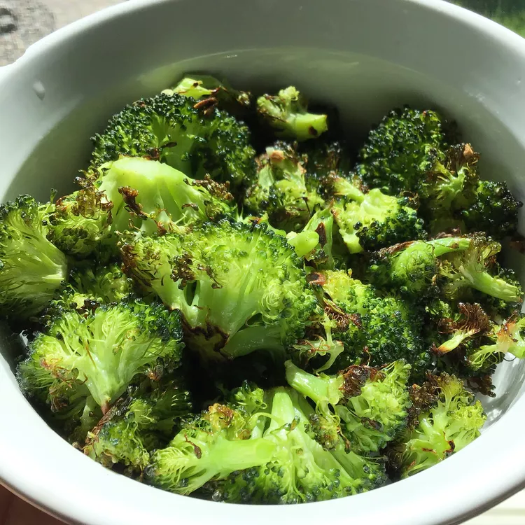

Roasted Garlic Lemon Broccoli

Description
A unique way to prepare broccoli. Florets are roasted after being tossed in olive oil and sprinkled with sea salt,
freshly ground black pepper, and minced garlic. A squeeze of lemon juice before serving seals the deal.
Ingredients
- 2 heads broccoli, separated into florets
- 2 teaspoons extra-virgin olive oil
- 1 teaspoon sea salt
- 1/2 teaspoon ground black pepper
- 1 clove garlic, minced
- 1/2 teaspoon lemon juice
- Salt and pepper
How to make Roasted Garlic Lemon Broccoli
- Preheat the oven to 400 degrees F (200 degrees C).
- Toss broccoli florets with extra virgin olive oil, salt, pepper and garlic in a large
bowl. Spread the broccoli out in an even layer on a baking sheet.
- Bake in the preheated oven until florets are tender enough to pierce the stems wuth a fork, 15 to 20 minutes.
Remove and transfer to a serving platter.
- Squeeze lemon juice liberally over broccoli before serving for a refreshing, tangy finish.
Return to main page